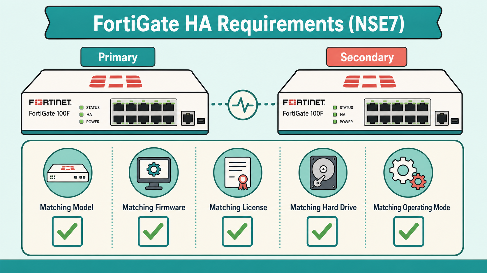
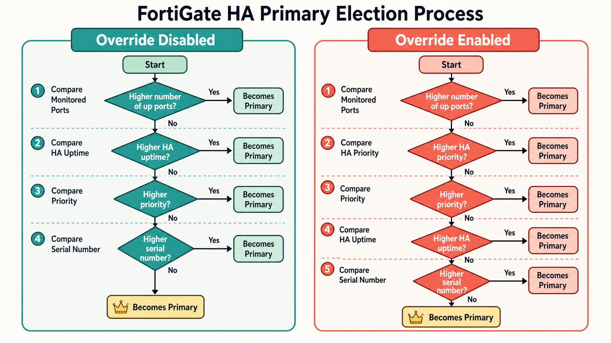
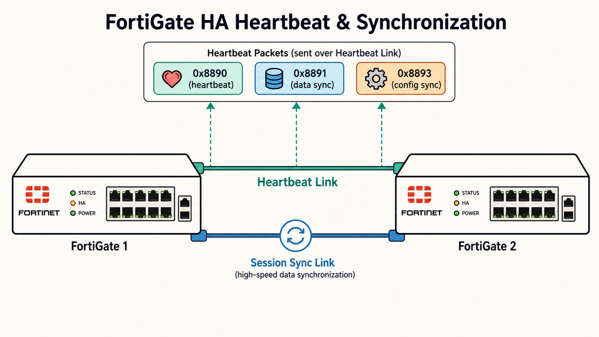
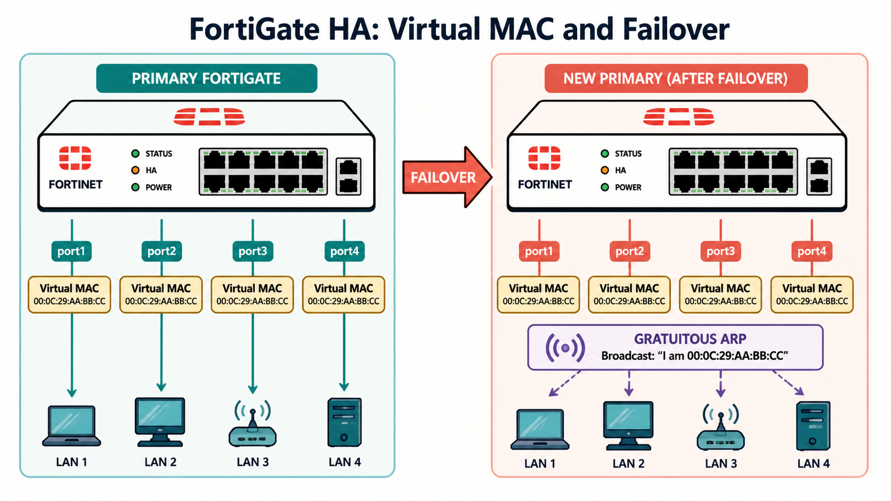
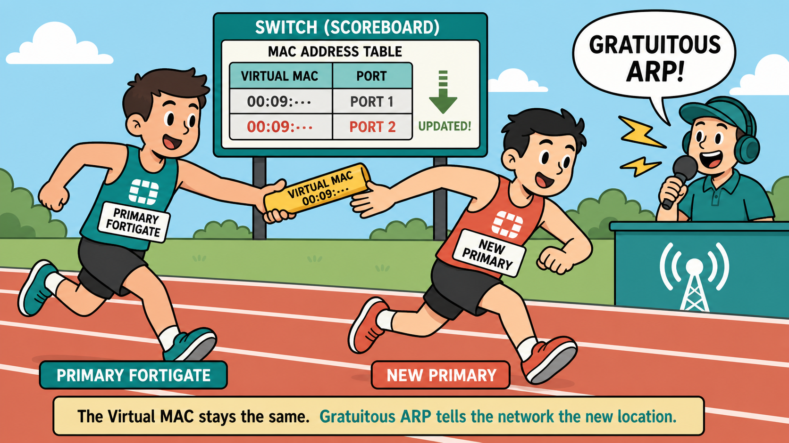
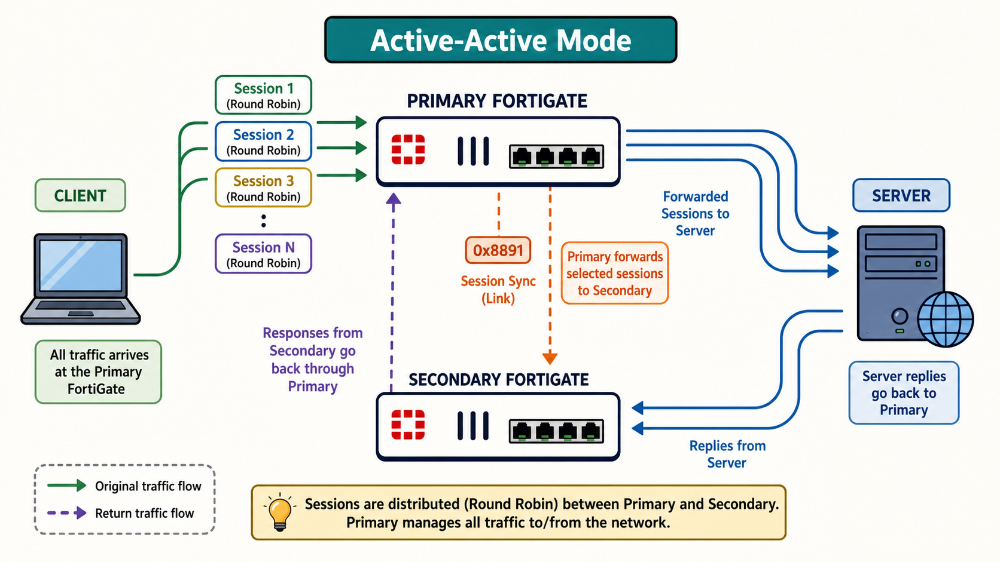

Forming an HA cluster sounds simple — just connect two FortiGates. But FortiGate enforces strict preconditions before any cluster can operate. Understanding which requirements are hardware-level vs configuration-level is critical for both deployment and troubleshooting.
- Why must all cluster members run the same firmware version? What happens at the protocol level if they don't match?
- If two members have different FortiGuard licenses, what licensing level will the cluster use — and why is that a problem you might not notice immediately?
HA Requirements

Hardware and configuration requirements that must match across all cluster members.
To form an HA cluster, all members must share the same hardware model (or VM model), firmware version, licensing level, hard drive configuration (same number and size), and operating mode of the management VDOM. These are non-negotiable — a mismatch prevents cluster formation.
Licensing is especially tricky: if members have different FortiGuard subscriptions, the cluster uses the lowest licensing level among all devices. For example, purchasing Web Filtering for only one member means no member in the cluster supports Web Filtering once joined. VDOMs divide a physical FortiGate into additional logical devices — so the operating mode (NAT vs transparent) of the management VDOM must also match.
From a configuration perspective, all members need the same HA group ID, group name, password, and heartbeat interface settings. Best practice calls for at least two heartbeat interfaces in the same broadcast domain, providing redundancy if one heartbeat link fails. The cluster will fall back to the next heartbeat interface ranked by priority in the list.
config system ha
set mode a-p
set group-id 10
set group-name "Training"
set password <password>
set hbdev "port3" 10 "port4" 20
endEvery cluster needs exactly one primary. FortiGate uses a tiered election process with two different orderings depending on whether HA override is enabled. The subtle difference between these two modes has real consequences for failover behavior in production.
- Override disabled is the default. In this mode, why does HA uptime take precedence over the configured priority — and how does running
diagnose sys ha reset-uptimeforce a failover? - What is the key tradeoff of enabling HA override — specifically, what does the cluster do when the original primary comes back online?
Primary Election Criteria

Election flowchart: Override disabled vs Override enabled criteria ordering.
When multiple FortiGates negotiate for primary, the election evaluates criteria in a specific order, stopping at the first criterion that produces a winner. Two orderings exist depending on the override setting.
Override Disabled (default): The cluster evaluates: (1) most connected monitored ports → (2) highest HA uptime (by at least 5 minutes) → (3) highest configured priority → (4) highest serial number. HA uptime outranks priority, which means a newly rebooted device with high priority will lose to a lower-priority device that has been running longer.
Override Enabled: The order becomes: (1) monitored ports → (2) priority → (3) HA uptime → (4) serial number. Priority now decides before uptime, so the device with the highest priority always becomes primary when available. Override must be manually enabled on each member — it is not synchronized.
# Enable override (run on each member)
config system ha
set override enable
end
# Force failover when override is disabled
# (run on the current primary)
diagnose sys ha reset-uptimeFGCP uses non-IP Ethernet frames for heartbeats — not TCP/IP — which means you can't route heartbeat traffic across Layer 3 boundaries. Understanding the distinct Ethernet types and what each carries is key to diagnosing HA issues.
- What is the risk of running session synchronization over the same link as heartbeat traffic, and what happens if all dedicated session sync interfaces fail?
- Why does FGCP use Ethernet types 0x8890/0x8891/0x8893 instead of IP for cluster communication?
Heartbeat & Synchronization

FGCP Ethernet types: 0x8890/8891 for HA functions, 0x8893 for config sync.
FGCP cluster communication uses proprietary Ethernet frame types rather than IP, enabling communication before IP addresses are assigned and ensuring heartbeat traffic stays local to the broadcast domain. Three Ethernet types are used:
| Ethernet Type | Purpose |
|---|---|
| 0x8890 and 0x8891 | Heartbeats, device discovery, primary election, data sync, device failure detection, and traffic redistribution |
| 0x8893 | Configuration synchronization |
By default, session synchronization occurs over the HA heartbeat link. For better performance, configure dedicated synchronization interfaces — this separates high-bandwidth session sync traffic from heartbeat packets. If multiple session sync interfaces are configured, traffic is load balanced. If all sync interfaces fail, synchronization falls back to the heartbeat link automatically.
# Configure dedicated session sync interfaces
config system ha
set session-sync-dev port5 port6
end
# Sniff heartbeat packets to verify HA communication
diagnose sniff packet any "ether proto 0x8890" 4Virtual MAC addresses are what make FortiGate HA failover transparent to the network — connected switches never need to update their ARP tables because the MAC address stays constant even after a different physical device takes over. But the mechanics of how these addresses are assigned and inherited are nuanced.
- During a failover, the new primary adopts the same virtual MAC addresses. Why does the new primary also send gratuitous ARP packets — and when might that not be enough?
- Why does Fortinet strongly recommend using unique HA group IDs for each cluster in the same broadcast domain?
Virtual MAC Addresses and Failover

Primary assigns virtual MACs; secondary inherits same MACs on failover.
When a primary FortiGate joins a cluster, FortiGate assigns a virtual MAC address to each interface except HA heartbeat and reserved management interfaces. The primary informs all secondary devices of these assignments. During a failover, the newly elected primary adopts the identical virtual MAC addresses — so connected switches see no MAC change and do not need to relearn paths.
After failover, the new primary broadcasts gratuitous ARP packets to inform switches that the virtual MAC is now reachable through a different port. Most switches update their MAC forwarding tables immediately. Some high-end switches may not — in those cases, enable link-failed-signal to force the former primary's interfaces to drop for one second, triggering switch MAC table clearing.
FortiGate supports three virtual MAC assignment methods (highest priority first): manual per-interface, automatic per-interface, and group-ID-based (default). The default method derives MAC addresses from the vcluster ID, group ID, and physical interface index — four different logic formulas apply depending on these values. Two clusters in the same LAN using the same group ID will generate conflicting virtual MACs.
# Force link-down on failover to clear switch MAC tables
config system ha
set link-failed-signal enable
end
# Check virtual MAC address on an interface
diagnose hardware deviceinfo nic wan1 | grep addr
# Manual virtual MAC assignment per interface
config system interface
edit port1
set virtual-mac <mac_address>
next
endVirtual MAC failover works like a relay race baton pass — the runner changes, but the baton (the MAC) stays the same.
- Virtual MAC address — the baton that never changes hands visibly to the audience (the network)
- Gratuitous ARP — the announcer telling the crowd which lane the new runner is in
- Link-failed-signal — dropping the baton briefly so the scoreboard (switch MAC table) resets

Active-active HA is often misunderstood as simple traffic splitting. In reality, all traffic still arrives at the primary first — the primary then decides which secondary to forward sessions to. The goal is leveraging unused secondary CPU, not raw bandwidth multiplication.
- Why does active-active mode typically show more traffic on the primary than on secondary devices, even when load balancing is configured?
- When would you enable
load-balance-all, and what traffic does it affect that isn't load balanced by default?
Active-Active Load Balancing

Active-active traffic flow: primary receives all traffic, distributes sessions to secondary.
In active-active mode, all cluster devices process traffic simultaneously. However, all incoming traffic is sent to the primary first, since only the primary holds virtual MAC addresses on data interfaces. The primary then selects sessions to distribute to secondary devices using one of six load balancing schedules.
| Schedule | Behavior |
|---|---|
| round-robin | Default. Sessions distributed equally across all members. |
| none | Load balancing off — primary handles all sessions. |
| leastconnection | Sessions sent to member with fewest active sessions. |
| weight-round-robin | Higher-weight members handle proportionally more sessions. |
| random | Sessions randomly distributed across members. |
| ip | Same source/destination IP pair always goes to same member. |
| ipport | Distribution based on source/destination IP and port. |
Only sessions subject to proxy inspection are distributed to secondaries by default. To load balance flow-inspected or uninspected sessions, enable load-balance-all. Note that FGCP active-active cannot load balance traffic traversing inter-VDOM links.
config system ha
set schedule round-robin
set load-balance-all enable
end